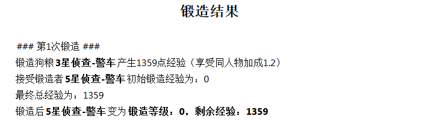
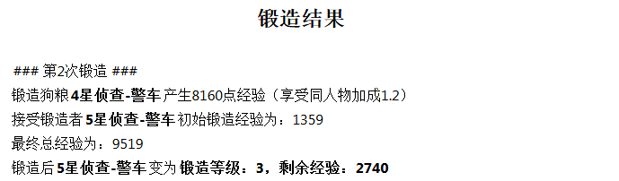
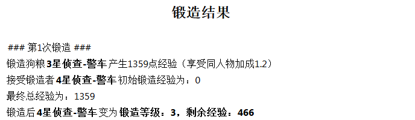
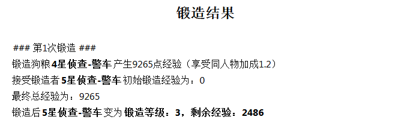

8 分开喂还是嵌套喂
这也是一个千古问题。例如，我有三星警车和四星警车各一只，锻造给五星的警车的时候，是分开喂（三星喂五星，然后四星喂五星），还是嵌套喂（三星喂四星，四星再喂五星）划算？
现在有了锻造计算器，我们可以直接模拟锻造（假设狗粮和五星警车都是未升级、未觉醒）。
分开喂：

三星喂五星

四星喂五星
嵌套喂：

三星先喂四星

四星再喂五星
所以能看到，分开喂的结果是3阶剩2740，嵌套喂是3阶剩2486，分开喂划算。
但是很多人至今不理解，官方不是说了锻造经验会传承的吗，为什么嵌套喂还亏了？很长一段时间我也不理解。在我分析Trailfire的锻造经验表格的时候，我也发现他表格的计算与实际的观测是有差异的，经过一整个下午的反复比较，我终于发现了卡邦程序员留下的一个bug5：在接受锻造经验的时候不是从1级开始，而是从0级开始，0级需要的经验和1级相同。但是在传承的时候，第0级的经验会亏损！3星狗粮亏42点，4星亏254点，而2740-2486=254！
精打细算的人看到这里可能会说，那就分开喂呗，省得操心。但我要说，还不能一概而论。因为在后文中我们会讨论，有可能你的狗粮不是送给同人物吃，甚至不是送给同系吃。如果我的三星和四星警车是要喂给五星震天尊呢？
虽然这是够我吹一年“我比卡邦还了解卡邦”的成果，但一只狗粮亏254点其实也没有太大影响。↩︎